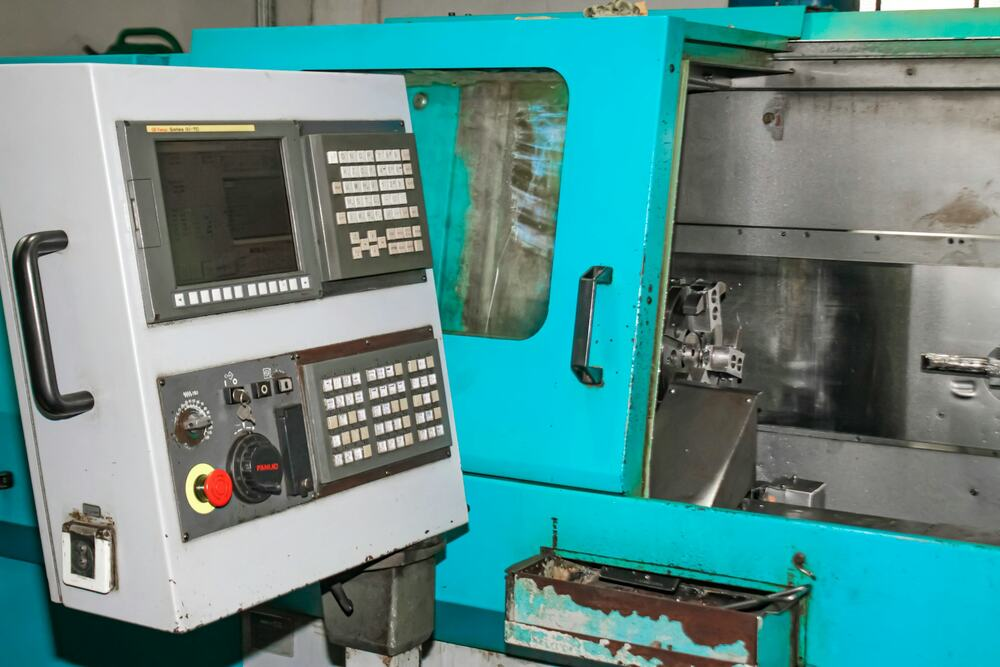

홈 / 회사소개
About
현장을 혁신해 온 30년의 시각으로,
사실을 봅니다
K1 Fact Finder는 제조 현장과 공급망을 개선해 온 경험을 바탕으로, 제조기업의 결정을 사실로 뒷받침하는 기업리스크 사실조사 회사입니다.
회사 개요
| 회사명 | K1 Fact Finder Center (케이원 팩트파인더 센터) |
|---|---|
| 사업 분야 | 제조 공급망 리스크 사실조사 |
| 주요 고객 | 제조기업 경영진 · 구매 · 생산기술 · 경영지원 조직 |
| 조사 방식 | 공개정보 · 동의 기반 현장실사 · 의뢰인 제공자료 분석 |
이름과 로고에 담은 뜻
- 렌즈 속 FF — Fact Finder법률·감사 분야의 사실조사(fact-finding)
- 체크 — 확인된 사실보고서의 신뢰성
- 손잡이 K1K1이 운영하고 책임지는 사실조사

탐정사 1급민간자격 · 등록번호 2023-003035
Expertise
제조·공급망 혁신 현장
30년의 전문성
조사는 글로벌 제조 현장 혁신, 공급망 컨설팅, 기준정보·MES 구축 현장을 거친 전문가가 직접 수행합니다.
- 글로벌 제조기업 현장 혁신25년제조 · 설비 · 품질
- 공급망(SCM) 혁신 컨설팅10년공급망 혁신 컨설팅
- 글로벌 제조기업 기준정보 컨설팅기준정보 정합성
- MES 전문기업 기술 임원MES 구축 · 프로세스 혁신
- 공공 주소·위치정보 기관 임원주소·위치정보 체계
- 국제 식별코드(GS1) 표준 전문업체·상품 식별 표준
- 해외 제조법인 프로세스 혁신 컨설팅해외 제조 현장
- 탐정사 1급민간자격 · 등록번호 2023-003035 · 발급 한국자격검정평가진흥원
Capability
경력이 조사 역량이 됩니다
- 제조 현장생산능력 · 설비 진위 판단
- 공급망협력사 리스크 구조 분석
- 기준정보 · GS1기업 실체 · 데이터 이상 검증
- MES생산 데이터 해석
- 해외 현장현지 협력사 실사
운영 원칙
- 이해상충 관리조사대상과 이해관계가 있는 경우 사전에 고지하고, 거절하거나 서면 동의를 받아 수행합니다
- 정보 차단조사 결과와 자료는 K1의 다른 사업과 공유하지 않습니다
- 전문가 협업법률 판단·디지털포렌식 등은 변호사·전문기관과 협업합니다
Principles
5대 조사 원칙
합법적 조사
공개정보 · 동의 기반 실사 · 적법하게 제공된 자료만 사용합니다
개인정보 보호
법인 중심으로 조사하며, 목적 범위 내에서 최소한으로 다룹니다
사실과 의견의 구분
확인된 사실과 추정·의견을 분리해 근거와 함께 표기합니다
비밀유지
계약상 비밀유지 의무, 자료 반환·파기 확인서를 발행합니다
조사범위 사전합의
합의한 범위 밖은 조사하지 않으며, 변경은 서면으로 합의합니다